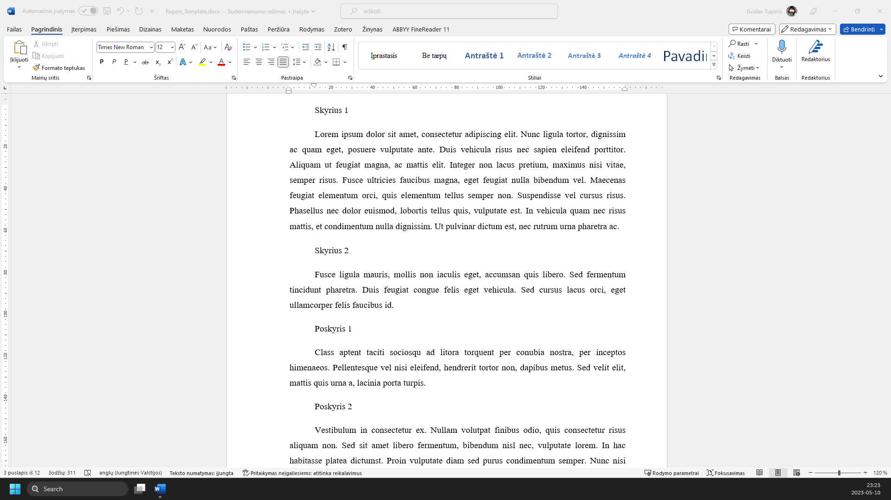
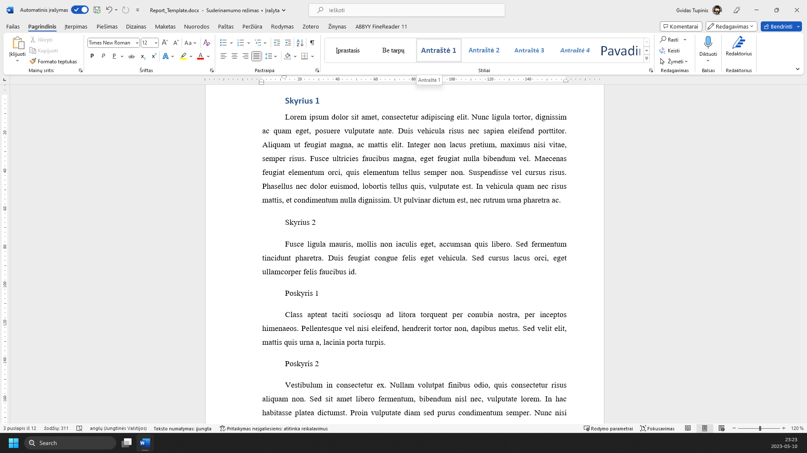
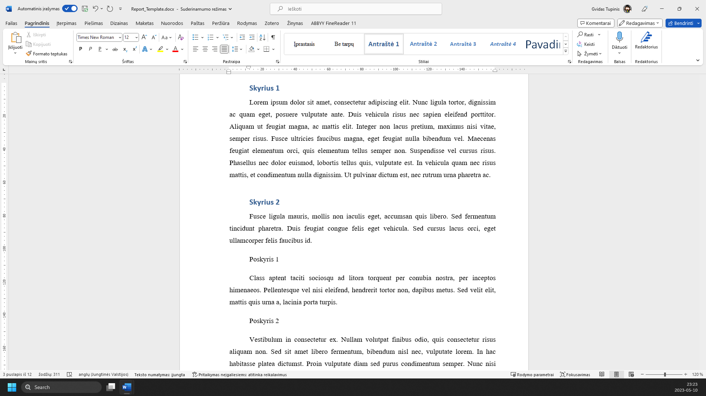
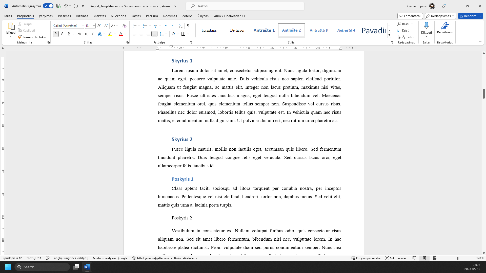

RAŠTO DARBO RENGIMAS
Stiliaus pasirinkimas
1 žingsnis iš 9
1.
Pasirenkate norimą skyriaus pavadinimą (užtenka spustelėti toje pačioje pastraipoje)

2.
Pagrindiniame meniu pasirenkate stilių ‘Antraštė 1’

3.
Pasirenkate kito skyriaus pavadinimą
4.
Pasirenkate stilių ‘Antraštė 1’

5.
Pasirenkate norimą poskyrio pavadinimą
6.
Pasirenkate stilių ‘Antraštė 2’
7.
Pasirenkate kitą norimą poskyrio pavadinimą

8.
Pasirenkate stilių ‘Antraštė 2’
9.
Dokumente sėkmingai įterpti skyriai ir poskyriai
Žaliai apibrėžta vieta rodo, kur paspausti. Vaizdą gali padidinti naršyklės mastelio valdikliu. Žingsnius taip pat keičia klaviatūros rodyklės.